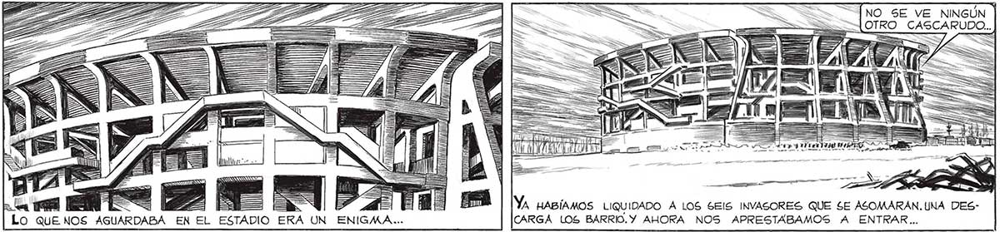
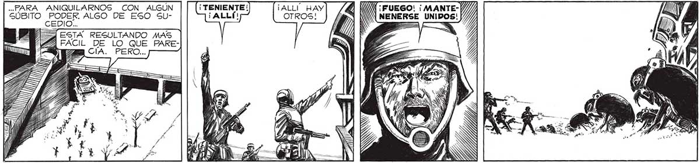

= NO SE VE NINGÚN | 105 ALOTRO_CASCARUDO.. A == VE AL WAVE mas => YA HABÍAMOS LIQUIDADO A LOS 6EIS INVASORES QUE SE ASOMARAN. UNA DESCARGA LOS BARRIO.Y AHORA NOS APRESTABAMOS A ENTRAR... POSIBLEMENTE NO HAYA NINGUNO MAS, TENIENTE. ESO CREO, FRANCO. LOS SEIS ESTARÍAN COMO CENTINELAS:SI HUBIERA OTROS CAS=A|CARUDOS YA LOS | HABRÍAMOS ' VISTO. PERO MEJOR NO DESCUIDARNOS... ¡QUIÉN SABE QUÉ SORPRESA NOS AGUARDA ALLÍ DENTRO! CN OS A e NANA A A dl 1! 4 port > nm a ENORME, ABRUMADORA, ANTE NOSOTROS SE ALZABA LA COMPLICADA ESTRUCTURA DE CEMENTO. LOS PILARES,NO SÉ POR QUE, GE ME ANTOJARON LAS PATAS EXTRAÑAS DE UN MONSTRUO COLOSAL. UN MONSTRUO QUE ESPERABA A Y ASRAR ¿ AS TANQUE BUSCABA LA ENTRAES DUDO 2 GANA DA_ PARA VEHÍCULOS. TENERNOS_A_TIRO... 7 IZ ..PARA ANIQUILARNOS CON ALGÚN ¡ALLI | (¡FUEGO! ¡MANTEGÚBITO a ALGO DE ESO SL- o) / NENERSE UNIDOS: PERO... a AA — == —

